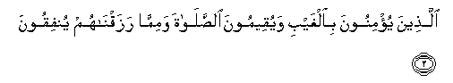
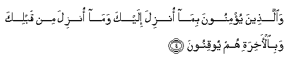
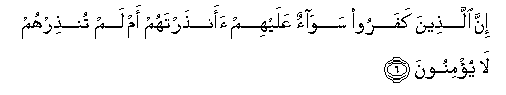
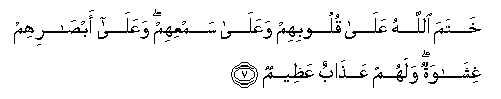

Sacred Texts Islam Index
Hypertext Qur'an Unicode Palmer Pickthall Yusuf Ali English Rodwell
Sūra II.: Baqara, or the Heifer. Index
Previous Next

The Holy Quran, tr. by Yusuf Ali, [1934], at sacred-texts.com
Sūra II.: Baqara, or the Heifer.
Section 1
1. A. L. M.
2. Thalika alkitabu la rayba feehi hudan lilmuttaqeena
2. This is the Book;
In it is guidance sure, without doubt,
To those who fear God;

3. Allatheena yu/minoona bialghaybi wayuqeemoona alssalata wamimma razaqnahum yunfiqoona
3. Who believe in the Unseen,
Are steadfast in prayer,
And spend out of what We
Have provided for them;

4. Waallatheena yu/minoona bima onzila ilayka wama onzila min qablika wabial-akhirati hum yooqinoona
4. And who believe in the Revelation
Sent to thee,
And sent before thy time,
And (in their hearts)
Have the assurance of the Hereafter.
5. Ola-ika AAala hudan min rabbihim waola-ika humu almuflihoona
5. They are on (true) guidance,
From their Lord, and it is
These who will prosper.

6. Inna allatheena kafaroo sawaon AAalayhim aanthartahum am lam tunthirhum la yu/minoona
6. As to those who reject Faith,
It is the same to them
Whether thou warn them
Or do not warn them;
They will not believe.

7. Khatama Allahu AAala quloobihim waAAala samAAihim waAAala absarihim ghishawatun walahum AAathabun AAatheemun
7. God hath set a seal
On their hearts and on their hearing,
And on their eyes is a veil;
Great is the penalty they (incur).